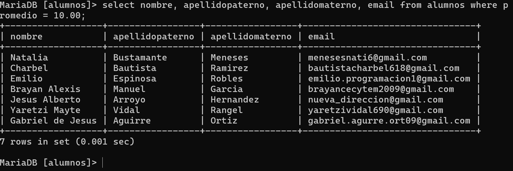
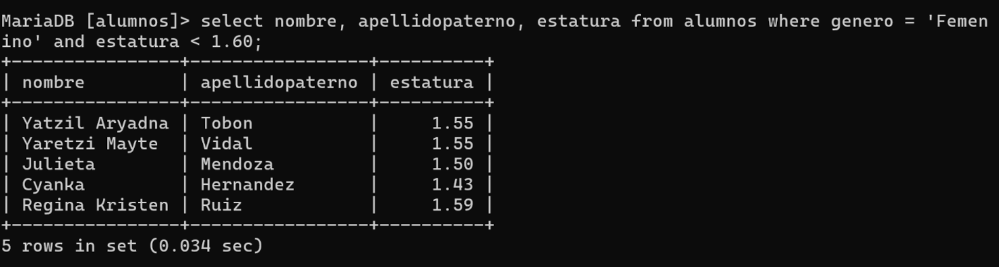
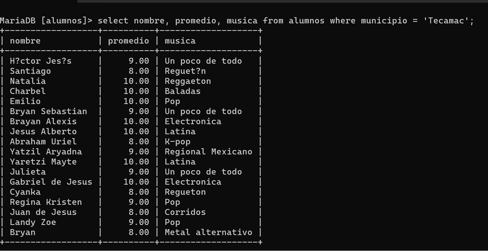

🔍 Consultas con SELECT FROM
El comando SELECT FROM se utiliza para consultar y visualizar datos almacenados en una tabla. Permite aplicar filtros, condiciones y seleccionar columnas específicas según lo que se necesite analizar.
📋 Sintaxis básica
SELECT columnas FROM nombre_tabla WHERE condición;Si se omite la cláusula WHERE, se mostrarán todos los registros de la tabla.
📘 Ejemplo 1: Filtrar por promedio
Consulta los alumnos con promedio igual a 10.00 y muestra su nombre y correo.
SELECT nombre, apellidopaterno, apellidomaterno, email
FROM alumnos
WHERE promedio = 10.00;
📗 Ejemplo 2: Filtrar por género y estatura
Consulta las alumnas con estatura menor a 1.60 metros.
SELECT nombre, apellidopaterno, estatura
FROM alumnos
WHERE genero = 'Femenino' AND estatura < 1.60;
📙 Ejemplo 3: Filtrar por municipio
Consulta los alumnos del municipio de Tecámac y muestra su promedio y tipo de música favorita.
SELECT nombre, promedio, musica
FROM alumnos
WHERE municipio = 'Tecamac';
💡 Recomendaciones
- Usa WHERE para aplicar condiciones específicas.
- Combina operadores lógicos como AND y OR para filtrar mejor los resultados.
- Utiliza ORDER BY para ordenar los resultados por una columna.
- Aplica LIMIT para mostrar solo una cantidad determinada de registros.
- Verifica siempre los nombres exactos de las columnas antes de ejecutar la consulta.